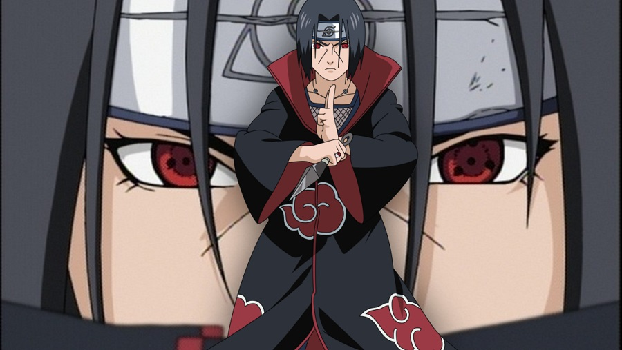

INFANCIA
Itachi foi um membro do clã Uchiha muito habilidoso, seus pais eram Mikoto e Fugaku, desde pequeno sempre foi muito inteligente e conhecido como um gênio entre os membros de seu clã e sempre pesquisou muito sobre a história de Konoha, não se limitando apenas Às historias passados por seu clã, Itachi era o irmão mais velho de Sasuke e sempre era elogiado por seus pais, porque deveria se tornar o líder do clã, já que era o irmão mais velho, isso fazia com que seu pequeno irmão crescesse à sua sombra. Com apenas 7 anos o garoto se formou na academia, se formou e despertou o Sharingan com apenas 8 anos, com 10 anos passou no exame Chunin e entrou na ANBU, mais tarde, aos 13 anos já era capitão.
O AMOR POR KONOHA
Como era um membro importante da ANBU, Itachi foi instruído a espionar sua vila, já que seu clã planejava um ataque contra ela. Entretanto, como era muito esperto, ele já sabia que um golpe como aquele provavelmente resultaria em uma nova Grande Guerra no mundo shinobi, então ele fez o contrário, espionava seu próprio clã e repassava tudo o que sabia ao terceiro Hokage e seus anciãos. Como era muito pacifico, o Hiruzen queria entrar em um acordo com os Uchiha, muito diferente de Danzou Shimura, que forçou Itachi a escolher entre as vidas do clã de Sasuke. Após esta conversa com Danzou, Itachi começou a agir de forma muito estranha, faltando nas reuniões do clã e indo contra aos ideais dos Uchiha, passando assim a ser suspeito de ter assassinado seu próprio amigo, Uchiha Shisui que foi mandado pela polícia militar para espiona-lo.